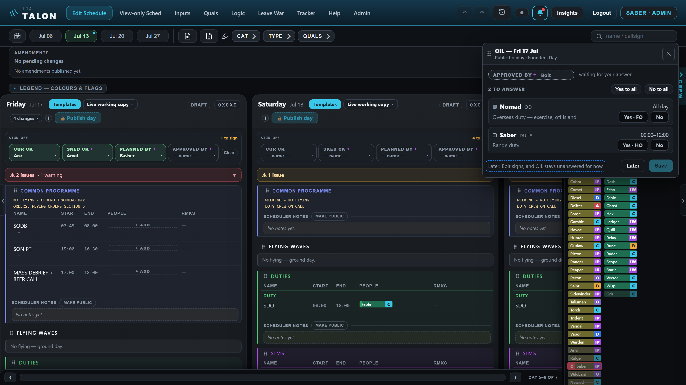

3 · An answer is changed after all four have signed
When it happens: rare, on a weekend or holiday not yet published. Ace, Anvil and Basher each press Later. Bolt, at APPROVED BY, answers No for Saber’s range duty and saves, so all four have signed. Before the day goes out, Saber opens his own duty and changes OIL to Yes.

Friday 17 Jul: three signed, the list waiting on Bolt at APPROVED BY, Saber’s range duty second.
RecommendedA · The four names are cleared
An answer someone signed over was changed, so the day must be signed again before it is published. Answering a question that was still open when they signed leaves the names, as built.
B · The names stay for any answer, first or changed
The day could be published with Saber earning OIL that Bolt refused, and no sign-off box would change.
Why A: it keeps what you asked for (the person without the authority presses Later, management answers, nobody signs twice) and still stops OIL going out that a signer turned down.
2 · On a published day, does an answer clear the names?
When it happens: after a day is published, something is added that needs an OIL answer, so the day needs an amendment signed. Ace, Anvil and Basher press Later. Bolt answers at APPROVED BY and saves.
The same boxes and list, but on a day already published that is waiting for an amendment.
RecommendedA · Ace, Anvil and Basher stay signed
The same rule as a day not yet published. The day still shows the amendment waiting until AL is published.
B · Their three names are cleared
This is how the build works now, because any change on a published day clears the sign-offs. The three sign again; the list does not ask them, since the question has been answered.
Why A: it is the same job as on any other day, and B makes three people sign twice for nothing they need to look at again.